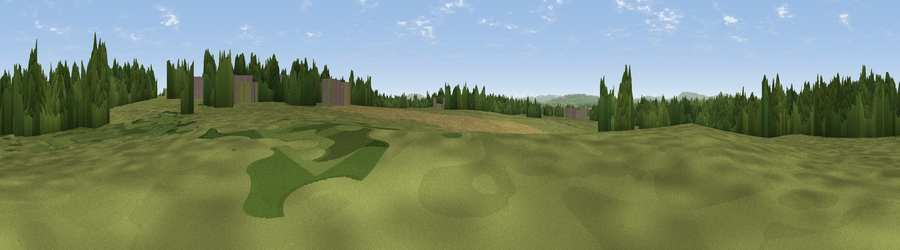

Viewpoint near Five Oaks
#37349 in England · top 56% of its area beats it · near Five Oaks · access?Where it is
The exact computed spot (TQ 09432 28363). Click the marker for map links.
Public access: no public right of way or access land is recorded at this exact spot — it may be on private land. Computed from Natural England's CRoW access layer and OpenStreetMap rights of way — not the legal definitive map. Always verify locally.
The view, rendered

A 360° render of this exact spot computed from the terrain model, tree cover and land cover — summer colours, afternoon light, calibrated against photographs of famous viewpoints. Real trees, hedges and buildings will differ in detail.
The panorama
Grey silhouette: terrain skyline in each direction (720 bearings, Earth curvature and refraction included). Dashed green: skyline with trees (+15 m) and buildings (+8 m) as obstacles. Blue strip: how far the ground is visible on each bearing.
Where the view opens
Wedge length = distance to the farthest visible ground on that bearing (vegetation-aware). Rings at 10, 25 and 50 km.
What fills the view
52% grassland · 34% woodland · 12% cropland · 2% built-up
Angular shares of the visible panorama (visual magnitude), not map area. Landscape diversity 0.46 (0–1 Shannon).
Key numbers
More beautiful places nearby
The staircase of upgrades: each row has a higher view potential than everything closer. Driving times are estimates from straight-line distance, calibrated against real road routing — check an actual route before setting out.
| Place | Direction | Drive | Score |
|---|---|---|---|
| Sharpenhurst Hill | E · 4 km | ~10 min | 46.1 |
| Toat Hill | SW · 8 km | ~16 min | 50.1 |
| Viewpoint near Stopham | SW · 10 km | ~19 min | 65.4 |
| Viewpoint near Holmbury St Mary | N · 15 km | ~26 min | 67.0 |
| Viewpoint near Storrington | S · 16 km | ~28 min | 83.9 |
| Viewpoint near Washington | SSE · 17 km | ~29 min | 85.0 |
| Chanctonbury Ring | SSE · 17 km | ~30 min | 87.0 |
| Firle Beacon | ESE · 45 km | ~65 min | 88.9 |
51.04421, -0.44036 · source: osm peak · position refined by local search. Computed location — check access rights before visiting.